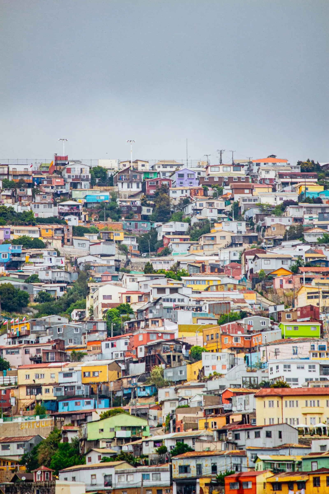
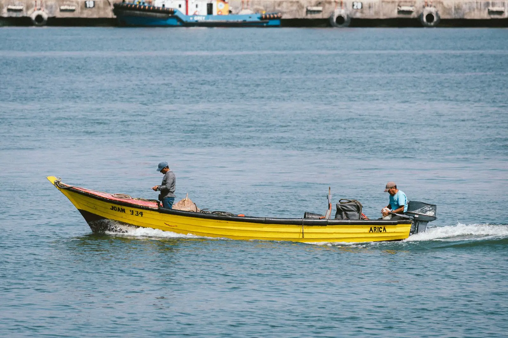
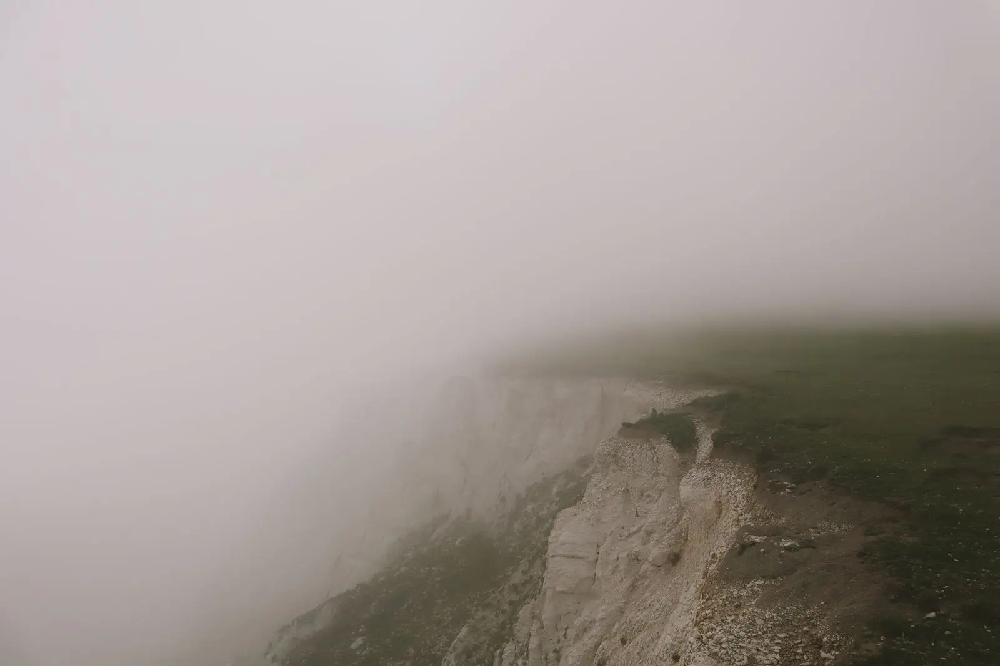
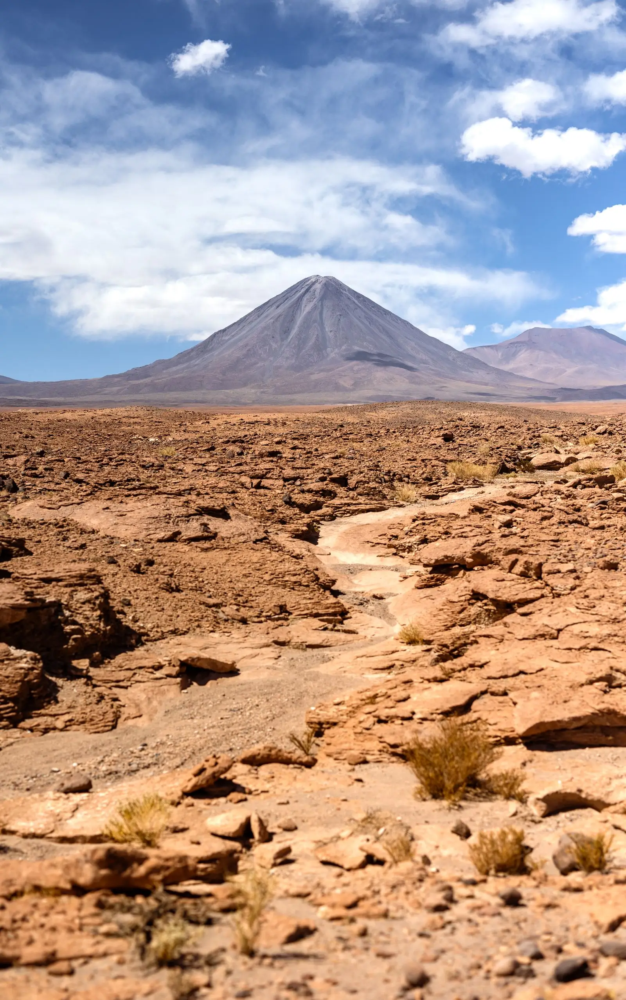
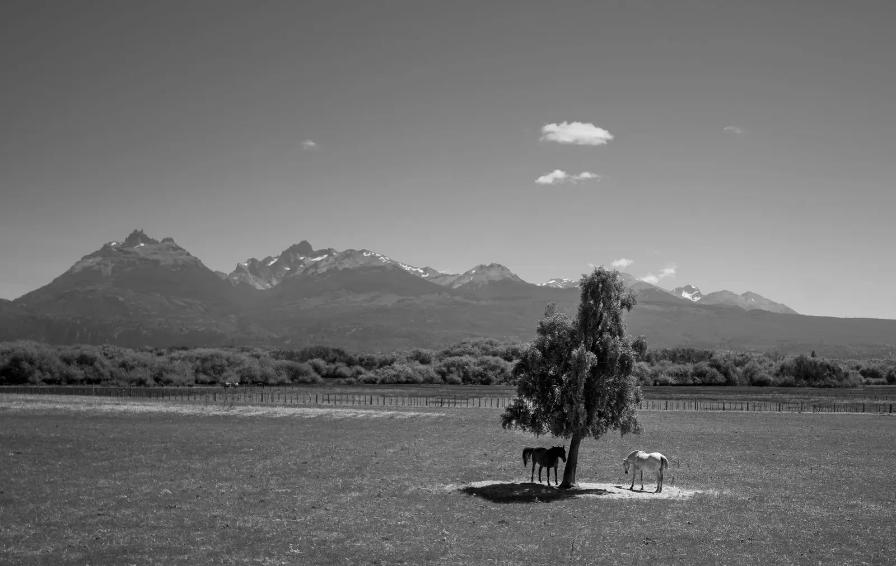

Cerro Alegre, de lunes a lunes
Un año fotografiando la misma escalera a las siete de la mañana. Expuesta en la Galería Subida Cumming en 2025.
- Valparaíso
- 2025
- 48 fotografías
Tomás Aravena, fotógrafo en Valparaíso
Trabajo por encargo para revistas y fundaciones, y en series propias que tardan un año o más. Cada una se publica como libro o exposición.

Un año fotografiando la misma escalera a las siete de la mañana. Expuesta en la Galería Subida Cumming en 2025.

Pescadores artesanales de la caleta de Arica, retratados durante la temporada del jurel. Encargo de la Fundación Mar Chico.

La niebla costera que riega el desierto, seguida durante tres inviernos entre Iquique y Tocopilla. Publicada por la revista Litoral.

Cerros y volcanes que no aparecen en los mapas turísticos de San Pedro de Atacama, fotografiados a más de 4.000 metros.

Puesteros y caballos en la estepa de Coyhaique, en blanco y negro y con película de medio formato. Libro editado por Ediciones Estepa.